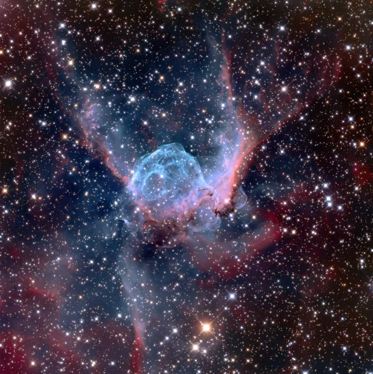
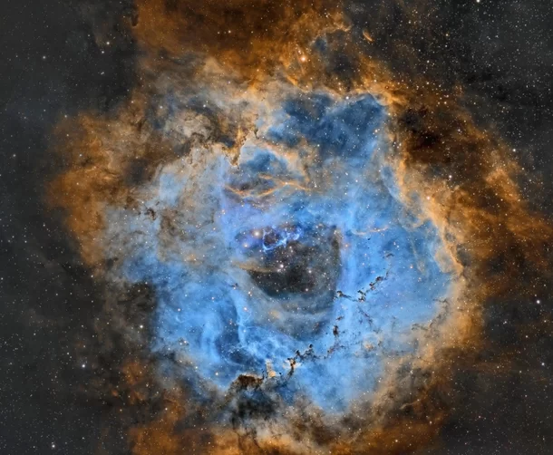
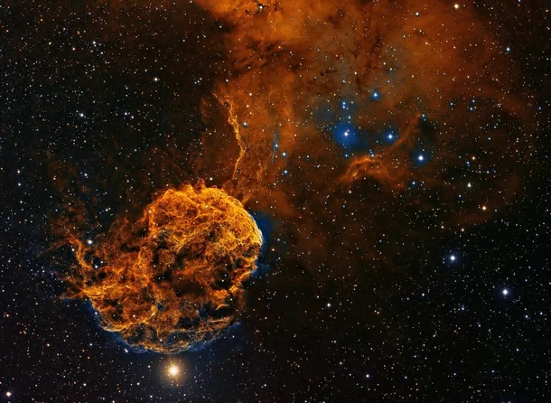
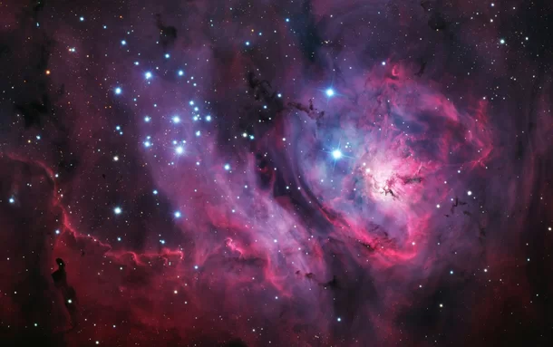
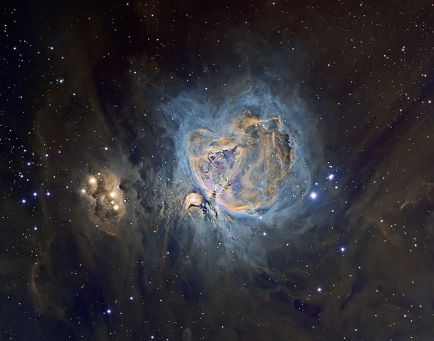
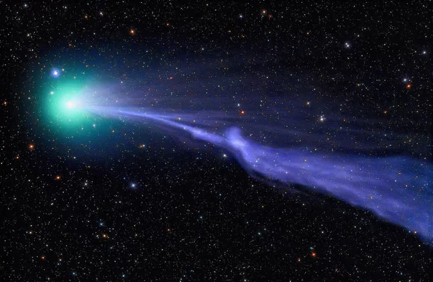

Imagens de fênomenos do espaço que vão te supreender
Confira a lista abaixo:
- THOR’S HELMET (NGC 2359)
- ROSETA-NBV5
- IC 443
- HERSCHEL 36
- NEBULOSA DE ORION
- C/2014 Q2 LOVEJOY
THOR’S HELMET (NGC 2359)”
A Nebulosa NGC 2359 vem sendo intitulada também como “Thor’s Helmet”. Ela está situada a cerca de 11 mil anos-luz da terra. Sua semelhança à uma bolha se dá por conta do material interestelar varrido pelos ventos da estrela central da nebulosa, conhecido como Wolf-Rayet.
ROSETA-NBV5
No núcleo da Nebulosa de Roseta as jovens estrelas muito quentes têm aquecido o escudo gasoso circundante a uma temperatura na ordem dos 6 milhões de graus Kelvins, resultando na emissão de grandes quantidades de raios-x.
IC 443
Situada na Constelação de Gêmeos, IC 443 é “provavelmente” um remanescente da Galáxia Supernova – estrela que poderia ter explodido há 30.000 anos atrás.
HERSCHEL 36
Situado a cerca de 5.000 anos-luz de distância, o berçário estelar da Nebulosa da Lagoa localiza-se na Constelação de Sagitário. Nuvens de hidrogênio estão lentamente em colapso para o nascimento de novas estrelas, cujos brilhantes raios ultravioleta dão um tom avermelhado ao gás que está ao seu redor.
NEBULOSA DE ORION
A Nebulosa de Orion é considerada um dos objetos astronômicos mais conhecidos de nosso Universo. As cores em tons de laranja que podem ser vistos nas voltas da Nebulosa são causados por gás de hidrogênio extremamente quente.
C/2014 Q2 LOVEJOY
Fotografia do cometa Lovejoy viajando pelo sistema solar, deixando para trás uma névoa azul esverdeada. O cometa pôde ser visto por binóculos entre o fim do ano passado (2014) e início de 2015. A névoa radiante deixada pelo cometa se dá devido ao gás diatômico, formando uma espécie de “cauda” proveniente de ventos solares.
